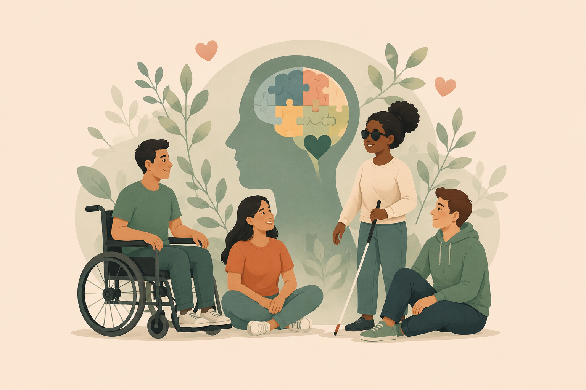
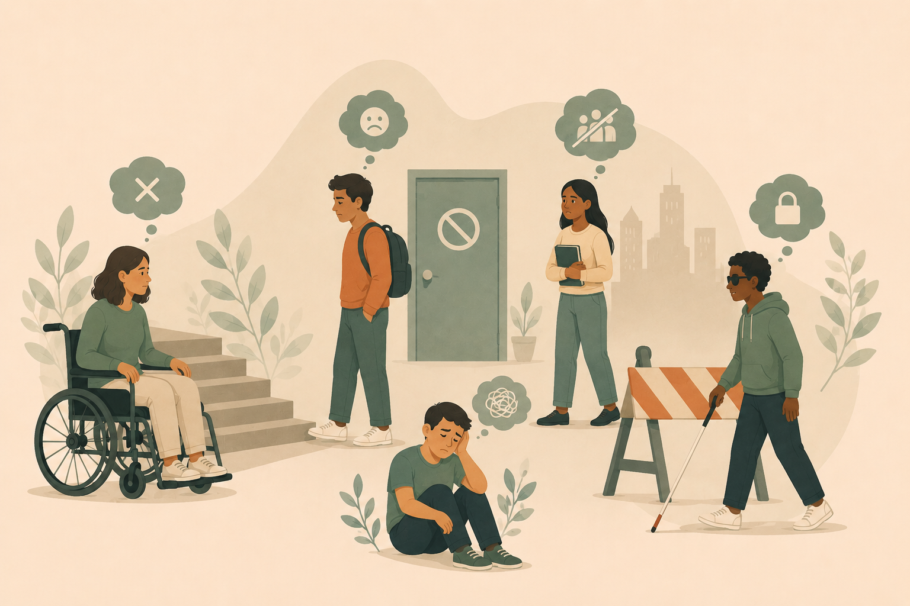
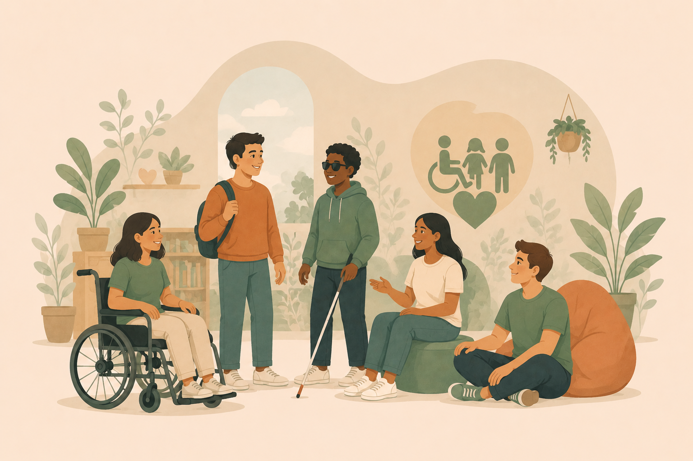
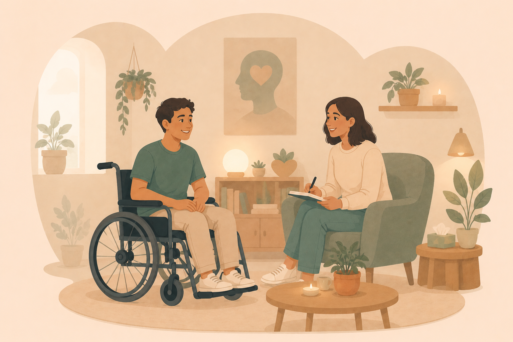
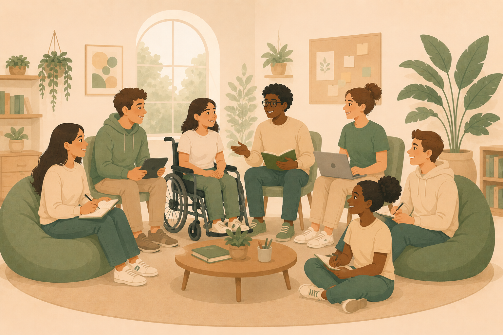

O que é Saúde Mental?
A saúde mental está relacionada à forma como uma pessoa pensa, sente e enfrenta os desafios da vida. Ela influencia nossos relacionamentos, nossa autoestima e nossa capacidade de participar ativamente da sociedade.
Assim como a saúde física, a saúde mental precisa de atenção e cuidado. Quando negligenciada, pode afetar o bem-estar emocional e a qualidade de vida.
Saúde Mental e Pessoas com Deficiência
Pessoas com deficiência enfrentam desafios que vão além das limitações físicas, sensoriais ou intelectuais, muitas vezes causados por barreiras sociais e preconceitos.
Essas dificuldades podem impactar diretamente o bem-estar emocional, tornando essencial a promoção da inclusão e do respeito.

Desafios Enfrentados
Muitas pessoas com deficiência ainda convivem com exclusão social, discriminação e falta de oportunidades em diferentes áreas da vida.
Essas barreiras afetam a autoestima e o sentimento de pertencimento, impactando diretamente a saúde mental.

Inclusão Social
A inclusão social garante que todas as pessoas tenham acesso às mesmas oportunidades, respeitando suas diferenças e valorizando suas capacidades.
Uma sociedade inclusiva promove participação, autonomia e dignidade, reconhecendo a diversidade como parte fundamental da convivência humana.

Canais de Apoio
O cuidado com a saúde mental pode envolver apoio profissional, familiar e comunitário, sendo essencial em momentos de dificuldade emocional.
Buscar ajuda é um ato de cuidado e não de fraqueza. Redes de apoio podem fazer grande diferença na vida das pessoas.
Onde Buscar Apoio?
- Psicólogos e profissionais da saúde mental
- Unidades Básicas de Saúde (UBS)
- Centros de Atenção Psicossocial (CAPS)
- Familiares e amigos de confiança
- Instituições de apoio à pessoa com deficiência

Sobre o Projeto
O Mente Inclusiva é um projeto desenvolvido por estudantes da UniLaSalle-RJ com o objetivo de promover informação e reflexão sobre a saúde mental de pessoas com deficiência.
Buscamos incentivar o respeito às diferenças, combater preconceitos e contribuir para uma sociedade mais inclusiva e acolhedora.
Avaliação e Feedback
Sua opinião nos ajuda a melhorar o projeto e ampliar a conscientização sobre saúde mental e inclusão.
